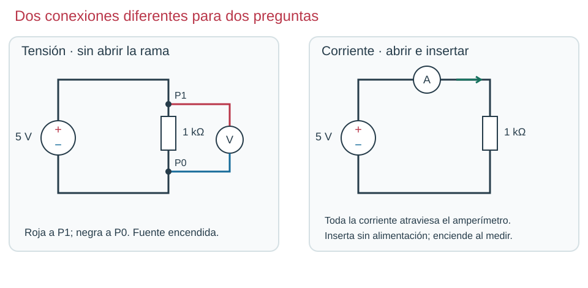
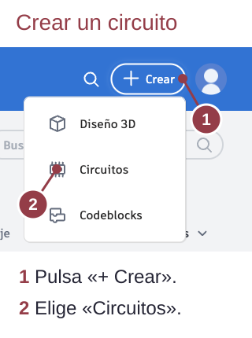
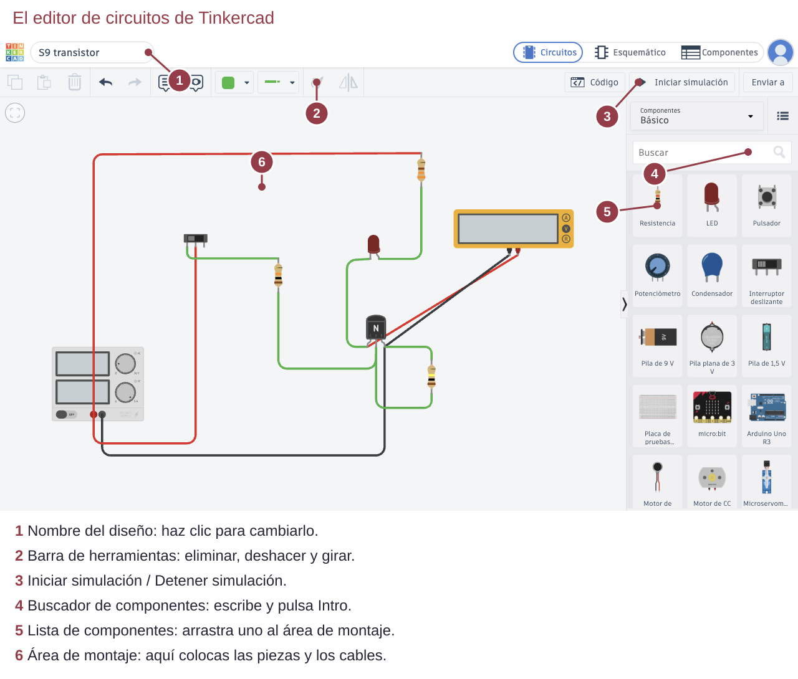
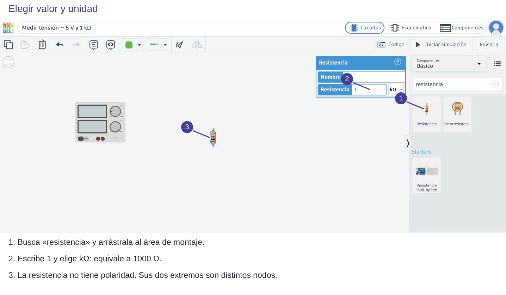

Contenido
Qué es un circuito
Un circuito es un camino cerrado por el que circula la corriente eléctrica. Necesita una fuente: una pila, una batería o la fuente del taller. Toda fuente tiene dos bornes: positivo (+) y negativo (−). En Tinkercad se llama Fuente de alimentación y hoy la pondrás a 5 V. La corriente sale por el +, recorre los componentes y vuelve por el −. Si el camino se corta en algún punto, la corriente se para en todo el circuito.
La tensión (o voltaje) es el «empuje» que da la fuente a la corriente, y siempre se mide entre dos puntos, como la diferencia de altura entre dos escalones: un punto solo no tiene tensión. Igual que el agua baja de lo alto a lo bajo, la corriente va del punto de más tensión al de menos. Se mide en voltios (V). Una fuente de 5 V tiene 5 V de diferencia entre su + y su −.

1. Entra en Tinkercad
Tinkercad es el mismo programa que usaste en la unidad de diseño 3D. Ahora usarás su parte de Circuitos.
- Ve a tinkercad.com/joinclass, escribe el código de clase que te da tu profesor y pulsa Ir a mi clase.
- Pulsa Unirte con el inicio de sesión de estudiante.
- Escribe tu usuario IdEA y pulsa Ir a mi clase.

- Pulsa + Crear (arriba a la derecha) y elige Circuitos. Se abre el editor de circuitos.
- Arriba a la izquierda haz clic en el nombre inventado del diseño, escribe S1 tension y pulsa Intro. Tinkercad guarda solo.

2. Conoce la pantalla

Para colocar un componente, búscalo en la zona 4 y arrástralo al área de montaje. Al hacer clic sobre él aparece un cuadro donde cambias sus valores. Para girarlo, pulsa R; para borrarlo, Supr.
3. Monta el circuito
- Escribe fuente en el buscador y arrastra Fuente de alimentación. Haz clic en ella y pon Voltaje: 5.
- Busca resistencia y arrástrala. Haz clic en ella, escribe 1, elige la unidad kΩ y pulsa Intro.
- Une con cables el + de la fuente con un extremo de la resistencia, y el otro extremo con el −. Para hacer un cable, haz clic en un terminal y después en el otro. Usa rojo para el + y negro para el −.

4. Mide la tensión
- Busca multímetro y arrástralo. Haz clic en él y elige el modo Voltaje.
- Conecta su borne rojo al extremo de la resistencia que va al + (P1) y el negro al extremo que va al − (P0). El multímetro queda en paralelo: tocando dos puntos, sin cortar el circuito.
- Pulsa Iniciar simulación.

Compruébalo: el multímetro tiene que marcar 5,00 V. Para cambiar algo, pulsa antes Detener simulación.
| Lo que ves | Qué compruebas |
|---|---|
| 0,00 V | ¿Están las dos puntas en el mismo nodo? ¿Está en marcha la simulación? |
| −5,00 V | Las puntas están al revés: cambia el rojo por el negro. |
| Un cable no llega | Acerca la vista: el extremo del cable debe quedar sobre el terminal, no solo cerca. |
Ahora tú. Detén la simulación y lleva la punta roja también a P0, junto a la negra. ¿Qué crees que marcará? Compruébalo.
Ver solución
0,00 V. Las dos puntas están en el mismo nodo: entre un punto y él mismo no hay diferencia de tensión, aunque la fuente funcione.
Compruébalo
Antes de seguir, decide si cada frase es verdadera o falsa.
00:00: